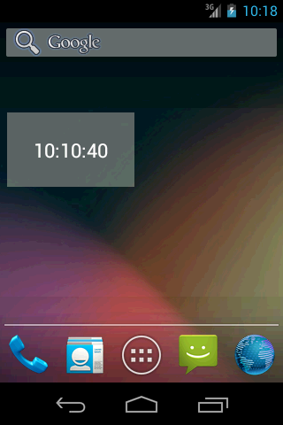
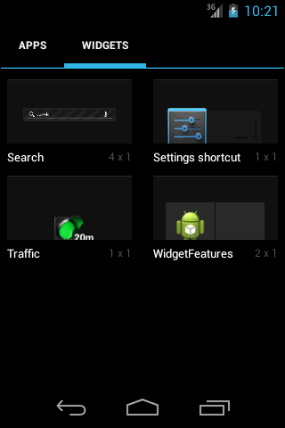
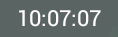
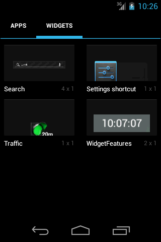
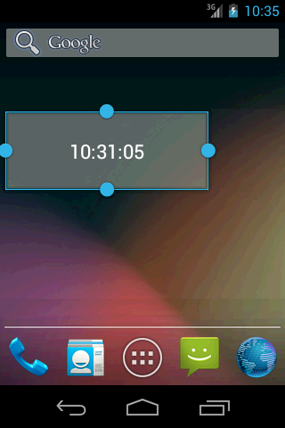
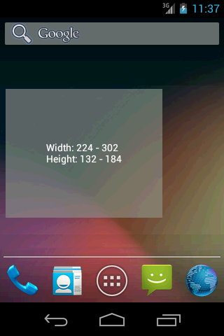
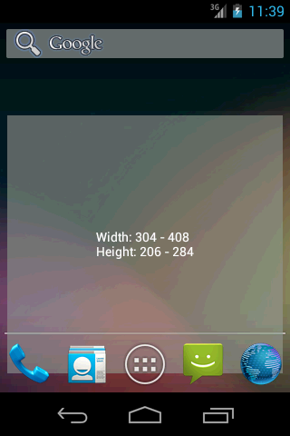
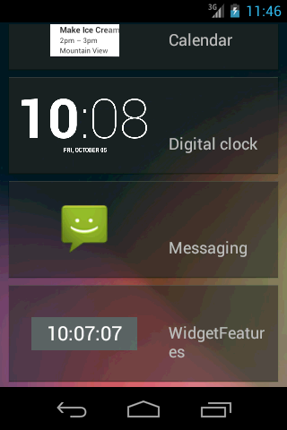
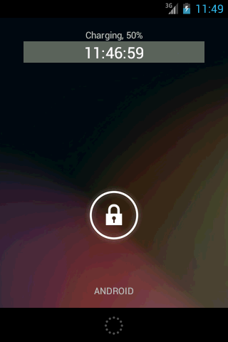

В этом уроке:
- рассмотрим прочие возможности виджета: превью, изменение размера, экран блокировки, ручное обновление
В прошлых уроках мы рассмотрели все основные моменты, касающиеся виджетов. Осталось поговорить о нескольких небольших, но полезных возможностях.
Не буду создавать отдельный проект под это, покажу только фрагменты кода и скрины. Знаний, полученных в предыдущих уроках, должно хватит, чтобы понять, о чем идет речь.
Превью
(API Level 11)
Когда вы хотите добавить виджет, вы открываете экран выбора и видите там список виджетов с названиями и картинками. По умолчанию, вместо картинки идет иконка приложения. А можно поставить туда свое изображение.
Я сделаю простой виджет, показывающий время при обновлении

Мой виджет называется WidgetFeatures и в списке виджетов он выглядит так:

В качестве превью-изображения сейчас используется иконка приложения и это не очень информативно.
Поставим свою картинку. Я сделаю скрин Home-экрана с моим виджетом, затем обрежу картинку до такого состояния

закину в папку res/drawable и пропишу ее в файле метаданных виджета
android:previewImage="@drawable/screen"Теперь виджет в списке будет выглядеть так:

И пользователь имеет примерное представление, как будет выглядеть виджет после установки.
Изменение размера
(API Level 12)
Вы можете предоставить пользователю возможность менять размеры виджета.

Для этого необходимо прописать в метаданных:
android:resizeMode="horizontal|vertical"В этом случае виджет будет способен менять размер и по вертикали и по горизонтали. Если вам нужно только одно направление, оставьте только его в значении атрибута.
Вы можете растянуть виджет на сколько это позволит свободное место на экране. Но не сможете сделать его меньше, чем изначально указанные размеры minHeight и minWidth.
Для этого в API Level 14 появляются еще два атрибута для метаданных: minResizeWidth и minResizeHeight. Они как раз и ставят минимальные значения для изменения размера виджета, а атрибуты minHeight и minWidth становятся значениями по умолчанию и используются для задания первоначального размера виджета при добавлении.
В API Level 16 в классе провайдера появляется метод onAppWidgetOptionsChanged. Метод срабатывает, когда вы меняете размер виджета. Он предоставляет вам Bundle с данными (тип - int, единицы измерения - dp) о новом размере. Данные можно извлечь с помощью этих ключей:
OPTION_APPWIDGET_MIN_WIDTH
OPTION_APPWIDGET_MIN_HEIGHT
OPTION_APPWIDGET_MAX_WIDTH
OPTION_APPWIDGET_MAX_HEIGHT
Как видно по названию переменных, система возвращает не точное значение новой ширины или высоты виджета, а диапазон с минимальным и максимальным значением. Не знаю каким образом формируются эти значения, но нам предлагается использовать их, чтобы подстраивать содержимое виджета под новые размеры.
Для примера выведу эти цифры в виджет.
Вот виджет шириной в две ячейки и высотой в одну (2х1).

А вот, что будет, если его растянуть до 3х2

Растянем до 4х3

Данные о текущем размере виджета также можно получить с помощью метода getAppWidgetOptions класса AppWidgetManager. Он вернет вам Bundle с этими же параметрами.
Экран блокировки
(API Level 17)
Атрибут widgetCategory может определять возможность размещения виджета не только в Home (home_screen), но и на экране блокировки (keyguard) .
android:widgetCategory="home_screen|keyguard">В этом случае виджет появится в списке виджетов для экрана блокировки

И после добавления он будет виден

Чтобы программно определить где расположен виджет, используйте снова метод getAppWidgetOptions. Он вернет вам Bundle, из которого по ключу OPTION_APPWIDGET_HOST_CATEGORY можно вытащить категорию (тип int). Она может быть равна либо WIDGET_CATEGORY_HOME_SCREEN (home), либо WIDGET_CATEGORY_KEYGUARD (экран блокировки).
В метаданных вы также можете отдельно задать layout, использующийся для виджета на экране блокировки. Это атрибут android:initialKeyguardLayout. Аналогично атрибуту android:initialLayout указываете там layout-файл. Правда, у меня он почему-то не сработал и виджет с экрана блокировки использовал тот же layout, что и виджет на экране Home. Я не понял, почему.
Ручное обновление виджетов
Обычно система сама посылает broadcast-сообщения о том, что пора обновлять виджет, и минимальный порог, который она позволяет задать – это полчаса. Мы можем обойти это и назначить свое расписание. Есть несколько вариантов, как это организовать и что откуда вызывать. Я покажу один из них.
Все это делается в классе провайдера.
Создаем переменную:
final String UPDATE_ALL_WIDGETS = "update_all_widgets";Далее пишем в методах onEnabled и onDisabled:
@Override
public void onEnabled(Context context) {
super.onEnabled(context);
Intent intent = new Intent(context, MyWidget.class);
intent.setAction(UPDATE_ALL_WIDGETS);
PendingIntent pIntent = PendingIntent.getBroadcast(context, 0, intent, 0);
AlarmManager alarmManager = (AlarmManager) context
.getSystemService(Context.ALARM_SERVICE);
alarmManager.setRepeating(AlarmManager.RTC, System.currentTimeMillis(),
60000, pIntent);
}
@Override
public void onDisabled(Context context) {
super.onDisabled(context);
Intent intent = new Intent(context, MyWidget.class);
intent.setAction(UPDATE_ALL_WIDGETS);
PendingIntent pIntent = PendingIntent.getBroadcast(context, 0, intent, 0);
AlarmManager alarmManager = (AlarmManager) context
.getSystemService(Context.ALARM_SERVICE);
alarmManager.cancel(pIntent);
}Содержимое двух этих методов почти одинаково, только первый запускает посылку broadcast сообщения каждую минуту с помощью AlarmManager, а второй отменяет это.
В методе onReceive пишем:
@Override
public void onReceive(Context context, Intent intent) {
super.onReceive(context, intent);
if (intent.getAction().equalsIgnoreCase(UPDATE_ALL_WIDGETS)) {
ComponentName thisAppWidget = new ComponentName(
context.getPackageName(), getClass().getName());
AppWidgetManager appWidgetManager = AppWidgetManager
.getInstance(context);
int ids[] = appWidgetManager.getAppWidgetIds(thisAppWidget);
for (int appWidgetID : ids) {
updateWidget(context, appWidgetManager, appWidgetID);
}
}
}где updateWidget – это ваш метод, в котором прописана логика обновления виджета.
Здесь мы ловим broadcast, который каждую минуту шлет AlarmManager. Далее создаем ComponentName, соответствующий провайдеру виджета нашего приложения и, используя его, получаем список ID виджетов с помощью метода getAppWidgetIds. Далее этот список прогоняем через метод обновления.
И не забудьте поставить в метаданных атрибут updatePeriodMillis = 0, чтобы выключить для виджета рассылку broadcast-сообщений от системы.
Тем самым, мы задали свое расписание обновления. Оно включится при создании первого экземпляра виджета (или при старте системы, если есть экземпляры виджета) и выключится при удалении последнего экземпляра.